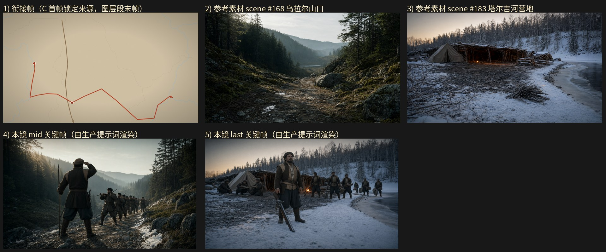

旁白：沿着卡马河丰富的水道向西进发，翻过乌拉尔山中部海拔较低的一个山口，抵达山脉东部的塔尔吉河河岸(Tagil River)，在这里扎营过冬。
设计卡预算：layer 5.5 s + gen 11 s；mid_frame_time（OLD）5.5 s
NEW 原地重写：关键帧任务墙钟 30.0s / 3 次调用 / 峰值提示词 73471 tokens / 完成 1459 tokens；视频任务墙钟 40.0s / 3 次调用 / 峰值提示词 75418 tokens / 完成 2841 tokens；保存 成功
NEW-scratch：关键帧任务墙钟 45.0s / 3 次调用 / 峰值提示词 69934 tokens / 完成 2187 tokens；视频任务墙钟 45.0s / 3 次调用 / 峰值提示词 72216 tokens / 完成 2255 tokens；保存 成功

（空）
@塔尔吉河营地 @乌拉尔山口，午后偏斜的阳光从画面左上方斜切过林冠，光线在坡面上落成斑驳条带，色调偏冷绿与土褐，山谷浮着一层薄雾，16:9 横构图电影感剧照。远景广角平视固定机位，取 @乌拉尔山口 的最高脊线，构图分三层：画面上部为开阔的淡青天空与起伏的山脊剪影线，中部是两侧深绿针叶林缓坡夹成的山口通道与散落的灰色岩块，下部为覆着残雪与踏痕的山道自画面下方蜿蜒向上穿过山口。@叶尔马克·齐莫菲叶维奇 立于山口脊顶、身形占据画面中央略偏左的脊线上，身体背对镜头、肩背前倾，右手握着长矛的杆身上段、矛尾拄在脊顶碎石地面上，左手抬起、掌缘遮在额前作眺望状，双腿分开站稳、两只皮靴踏在脊顶岩面上清晰可见，头转向画外东侧的更低山脊与河谷方向。他身后的山道上，一队哥萨克（灰褐粗呢长袍、黑色羊皮帽、腰束布带、肩扛火绳枪，共十余人）成纵向一列正在登坡，为首几人双腿跨步向上、双手握着各自的火绳枪枪身托在肩前，队尾半隐在针叶林影与薄雾中。逆光在林缘镀出暖边，山脊碎石被照亮，雪迹沿山道断续延伸到画外，画面开阔平稳、人物完整入画。16:9 横构图电影感剧照，单帧静态画面
@乌拉尔山口 @塔尔吉河营地，黄昏雪原上的低角度橙黄光线从画面右后方斜照，雪面反光柔和，营火呈暖橘亮点，背后覆雪的针叶林坡地与河面结冰的河岸沉入冷蓝灰，16:9 横构图电影感剧照。远景广角平视固定机位，取 @塔尔吉河营地 的全景，构图分三层：画面前景为河岸滩地上的砾石与浅雪、堆放的砍伐原木与柴堆，中景为沿河岸排开的几座树枝与原木搭成的低矮窝棚、帆布帐与几堆燃着的营火，后景为覆雪的针叶林坡地与部分结冰的河面。队伍已在营地扎下，哥萨克们（灰褐粗呢长袍、黑色羊皮帽、腰束布带，共十余人）散在营地各处：两人蹲在窝棚口，双腿屈膝蹲稳、双脚收于身下，双手各抱着一段原木往棚架上架；三人立在营火旁，双腿分开站定，各自双手把捆扎的行囊卸到雪地上，一人右手扶着火绳枪的枪身、枪管朝下斜指雪面；四人沿河岸成列继续搬运，双手各提着柴捆与卷起的帐布，双腿踏在雪面上可见。@叶尔马克·齐莫菲叶维奇 立在最大那座窝棚前的营地中央偏左，身体略侧向镜头，右手提着 @哥萨克火枪 的枪托后段、枪管朝下斜指雪地，火枪侧面的火绳夹与横插在枪身中段的木质通条在他的腿侧清楚可见，左手自然垂在体侧，双腿分开站稳、两只皮靴踏在雪面上清晰可见，下颌微抬、目光望向画外东侧的河岸方向，嘴唇抿平。营火把窝棚的木杆与雪地染成暖橘，河岸与林线转冷蓝，积雪上留着一道被踏过的痕迹向画外延伸，人物、窝棚与营地陈设全部完整入画，画面平稳开阔、层次清晰，可被下一镜直接承接。16:9 横构图电影感剧照，单帧静态画面
出场人物：@叶尔马克·齐莫菲叶维奇；场景：@乌拉尔山口、@塔尔吉河营地；道具：@哥萨克火枪。 0-1秒：俯拍全景式地图画面，米黄底色上分布浅灰细线轮廓与浅蓝细线水系，一条深褐直线自上方中部向下延伸，一条红色折线自左侧圆点向右下延伸、经中部圆点后折向右上、再向右下至右下角并在末端带红色箭头，光线均匀、无明暗对比，留白在右上与上方区域，镜头极缓推进。 1-4秒：接在空镜之后，切到 @乌拉尔山口 的中景平视固定机位，镜头略低，窄幅土石山道自画面左下向右上方攀升，两侧是深绿针叶林覆盖的缓坡丘陵，坡面散落灰色岩块与青苔，山道上留着断续的雪迹与踩踏出的骑道，几根倒伏的枯干斜压在小径边，远处更低的山脊与河谷轮廓在雾中退去；@叶尔马克·齐莫菲叶维奇 走在山道最前端、身形约占画面中部偏右，身体正面朝向画面右侧向上攀行，右手握着长矛的杆身中段、杆身斜指向画面上方，左手扶按在腰间刀柄上，双腿分开迈步、两只皮靴踩在碎石与残雪上清晰可见，脸朝画外右侧，下颌收紧、眉骨压低、嘴唇抿平；他身后沿山道排成一列十余人的哥萨克队伍（灰褐粗呢长袍、黑色羊皮帽、肩扛火绳枪、腰束布带），各自双腿前后错开踏在山道上、双手握着各自的火绳枪枪身托在肩前，队尾几人半隐在林影里；午后偏斜的阳光从画面左上方斜切过林冠，坡面落成斑驳条带，山谷浮着一层薄雾。 4-5.5秒：@乌拉尔山口，仍取山道中景平视固定机位，镜头随队伍向上推进，山口通道在画面上方收窄成一道林间的豁口，雪迹沿山道断续延伸，两侧针叶林坡地层层压暗；@叶尔马克·齐莫菲叶维奇 走在队列最前，右手握着长矛的杆身中段把矛斜指向画面上方，左手仍扶按在腰间刀柄上，双腿继续迈步、两只皮靴踩在碎石上可见，头抬起望向画面上方的脊线，眉骨压低、嘴唇抿平；身后的哥萨克队伍（灰褐粗呢长袍、黑色羊皮帽、肩扛火绳枪、腰束布带）成纵向一列跟进，为首几人双腿跨步向上、双手握着各自的火绳枪枪身托在肩前，队尾半隐在针叶林影与薄雾中。 5.5-8.5秒：切到 @乌拉尔山口 的山脊顶端远景广角平视固定机位，画面上部为开阔的淡青天空与起伏的山脊剪影线，中部是两侧深绿针叶林缓坡夹成的山口通道与散落的灰色岩块，下部为覆着残雪与踏痕的山道自画面下方蜿蜒向上穿过山口，远处更低的山脊与河谷轮廓在雾中层层退去；@叶尔马克·齐莫菲叶维奇 立于山口脊顶、身形占据画面中央略偏左的脊线上，身体背对镜头、肩背前倾，右手握着长矛的杆身上段、矛尾拄在脊顶的碎石地面上，左手抬起、掌缘遮在额前作眺望状，双腿分开站稳、两只皮靴踏在脊顶岩面上清晰可见，头转向画外东侧的更低山脊与河谷方向；他身后的山道上，哥萨克队伍（灰褐粗呢长袍、黑色羊皮帽、肩扛火绳枪、腰束布带，共十余人）成纵向一列正在登坡，为首几人双腿跨步向上、双手握着各自的火绳枪枪身托在肩前，队尾半隐在针叶林影与薄雾中；逆光在林缘镀出暖边，山脊碎石被照亮。 8.5-11.5秒：@乌拉尔山口 @塔尔吉河营地，切到东侧河谷方向的远景平视固定机位，镜头越过脊线朝东坡俯瞰，画面上部是淡青天空与起伏的林线，中部是覆雪的针叶林坡地与层层下降的谷坡，下部谷底露出河岸滩地的砾石与浅雪；@叶尔马克·齐莫菲叶维奇 已从脊顶下行到坡面的山道上、身形位于画面中央偏左，身体侧转半背对镜头朝向画外下方的河谷，右手提着 @哥萨克火枪 的枪托后段、枪管朝下斜指雪地，火枪侧面的火绳夹与横插在枪身中段的木质通条在他的腿侧清楚可见，左手自然垂在体侧，双腿分开迈步、两只皮靴踩在雪坡碎石上清晰可见，头朝画外东侧的谷底望去，下颌微抬；他身后与两侧的哥萨克队伍（灰褐粗呢长袍、黑色羊皮帽、腰束布带，共十余人）沿坡道成列下行，各自双手握着火绳枪的枪身把枪托扛在肩前、双腿迈步，队尾几人隐在林影里；午后偏斜的阳光从画面右后方照来，雪面泛出冷白反光，谷底漫起一层薄雾。 11.5-14秒：@塔尔吉河营地，切到河岸营地的中景平视固定机位，河岸滩地上已排开几座树枝与原木搭成的低矮窝棚与帆布帐，柴堆与燃着的营火散在棚前，背景是覆雪的针叶林坡地与部分结冰的河面；两名哥萨克（灰褐粗呢长袍、黑色羊皮帽、腰束布带）蹲在窝棚口，双腿屈膝蹲稳、双脚收于身下、两只靴底落在雪面上可见，双手各抱着一段原木往棚架上架；三名哥萨克站在营火旁，双腿分开站定、各自双手把捆扎的行囊卸到雪地上，其中一人右手扶着 @哥萨克火枪 的枪身、枪管朝下斜指雪面，火枪侧面的火绳夹与通条清楚可见；营地另一侧四人沿河岸成列搬运，双手各提着柴捆与卷起的帐布，双腿踏在雪面上可见，积雪上留着一道被踏过的痕迹向画外延伸；黄昏的低角度橙黄光线从画面右后方斜照，营火呈暖橘亮点，河岸与林线转冷蓝灰。 14-16.5秒：@塔尔吉河营地，切回营地的远景广角平视固定机位，构图分三层：前景为河岸滩地上的砾石与浅雪、堆放的砍伐原木与柴堆，中景为沿河岸排开的几座树枝与原木窝棚、帆布帐与几堆燃着的营火，后景为覆雪的针叶林坡地与部分结冰的河面，一座土屋的草顶冒着细淡的炊烟；@叶尔马克·齐莫菲叶维奇 立在最大那座窝棚前的营地中央偏左、身形略侧向镜头，右手提着 @哥萨克火枪 的枪托后段、枪管朝下斜指雪地，火枪侧面的火绳夹与横插在枪身中段的木质通条在他的腿侧清楚可见，左手自然垂在体侧，双腿分开站稳、两只皮靴踏在雪面上清晰可见，下颌微抬、目光望向画外东侧的河岸方向，嘴唇抿平；营火旁的哥萨克们（灰褐粗呢长袍、黑色羊皮帽、腰束布带，共十余人）已在营地各处站定，两人屈膝蹲在窝棚口双手扶着棚架的原木，三人立在营火旁双手垂在体侧，四人沿河岸成列站定、双手各提柴捆与帐布，队尾几人半隐在林影中；营火把窝棚的木杆与雪地染成暖橘，河岸与林线转冷蓝，积雪上那道被踏过的痕迹向画外延伸至营地边缘，人物、窝棚与营地陈设完整入画、构图平稳稳固。
5.5 秒
（空）
@乌拉尔山口，午后偏斜的阳光从画面左上方斜切过林冠，光线在坡面上落成斑驳条带，色调偏冷绿与土褐，山谷浮着一层薄雾，16:9 横构图电影感剧照。远景广角平视固定机位，取 @乌拉尔山口 的最高脊线，构图分三层：画面上部为开阔的淡青天空与起伏的山脊剪影线，中部是两侧深绿针叶林缓坡夹成的山口通道与散落的灰色岩块，下部为覆着残雪与踏痕的山道自画面下方蜿蜒向上穿过山口。@叶尔马克·齐莫菲叶维奇 立于山口脊顶、身形占据画面中央略偏左的脊线上，身体背对镜头、肩背前倾，右手握着长矛的杆身上段、矛尾拄在脊顶碎石地面上，左手抬起、掌缘遮在额前作眺望状，双腿分开站稳、两只皮靴踏在脊顶岩面上清晰可见，头转向画外东侧的更低山脊与河谷方向。他身后的山道上，一队哥萨克（灰褐粗呢长袍、黑色羊皮帽、腰束布带、肩扛火绳枪，共十余人）成纵向一列正在登坡，为首几人双腿跨步向上、双手握着各自的火绳枪枪身托在肩前，队尾半隐在针叶林影与薄雾中。逆光在林缘镀出暖边，山脊碎石被照亮，雪迹沿山道断续延伸到画外，画面开阔平稳、人物完整入画。16:9 横构图电影感剧照，单帧静态画面
@塔尔吉河营地，黄昏雪原上的低角度橙黄光线从画面右后方斜照，雪面反光柔和，营火呈暖橘亮点，背后覆雪的针叶林坡地与河面结冰的河岸沉入冷蓝灰，16:9 横构图电影感剧照。远景广角平视固定机位，取 @塔尔吉河营地 的全景，构图分三层：画面前景为河岸滩地上的砾石与浅雪、堆放的砍伐原木与柴堆，中景为沿河岸排开的几座树枝与原木搭成的低矮窝棚、帆布帐与几堆燃着的营火，后景为覆雪的针叶林坡地与部分结冰的河面。@叶尔马克·齐莫菲叶维奇 立在最大那座窝棚前的营地中央偏左，身体略侧向镜头，右手提着 @哥萨克火枪 的枪托后段、枪管朝下斜指雪地，火枪侧面的火绳夹与横插在枪身中段的木质通条在他的腿侧清楚可见，左手自然垂在体侧，双腿分开站稳、两只皮靴踏在雪面上清晰可见，下颌微抬、目光望向画外东侧的河岸方向，嘴唇抿平。队伍已在营地扎下，哥萨克们（灰褐粗呢长袍、黑色羊皮帽、腰束布带，共十余人）散在营地各处：两人蹲在窝棚口，双腿屈膝蹲稳、双脚收于身下，双手各抱着一段原木往棚架上架；三人立在营火旁，双腿分开站定，各自双手把捆扎的行囊卸到雪地上，其中一人右手扶着火枪的枪身、枪管朝下斜指雪面；四人沿河岸成列站定，双手各提着柴捆与卷起的帐布，双腿踏在雪面上可见。营火把窝棚的木杆与雪地染成暖橘，河岸与林线转冷蓝，积雪上留着一道被踏过的痕迹向画外延伸，人物、窝棚与营地陈设全部完整入画，画面平稳开阔、层次清晰，可被下一镜直接承接。16:9 横构图电影感剧照，单帧静态画面
出场人物：@叶尔马克·齐莫菲叶维奇；场景：@乌拉尔山口、@塔尔吉河营地；道具：@哥萨克火枪。 0-1秒：俯拍全景式地图画面，米黄底色上分布浅灰细线轮廓与浅蓝细线水系，一条深褐直线自上方中部向下延伸，一条红色折线自左侧圆点向右下延伸、经中部圆点后折向右上、再向右下至右下角并在末端带红色箭头，光线均匀、无明暗对比，留白在右上与上方区域，镜头极缓推进，画面无人。 1-4秒：接在空镜之后，切到 @乌拉尔山口 的山道中景平视固定机位，窄幅踩踏出的土石山道自画面左下向右上方攀升，两侧是深绿针叶林覆盖的缓坡，坡面散落灰色岩块与残雪，山道上留着断续的雪迹，远处更低的山脊与河谷轮廓在薄雾中退去；@叶尔马克·齐莫菲叶维奇 走在队列最前端、身形占画面中部偏右，身体正面朝向画面右上方向上攀行，右手握着长矛的杆身中段、矛身斜指画面上方，左手扶按在腰间刀柄上，双腿分开迈步、两只皮靴踩在碎石与残雪上清晰可见，脸朝画外右上方，下颌收紧、眉骨压低、嘴唇抿平；他身后沿山道排成一列十余人的哥萨克队伍（灰褐粗呢长袍、黑色羊皮帽、肩扛火绳枪、腰束布带），各自双腿前后错开踏在山道上、双手握着各自的火绳枪枪身托在肩前，队尾几人半隐在林影里；午后偏斜的阳光从画面左上方斜切过林冠，坡面落成斑驳条带，山谷浮着一层薄雾。 4-5.5秒：@乌拉尔山口，仍取山道中景平视固定机位，镜头随队伍向上推进，山口通道在画面上方收窄成一道林间的豁口，雪迹沿山道断续延伸，两侧针叶林坡地层层压暗；@叶尔马克·齐莫菲叶维奇 走在队列最前，右手握着长矛的杆身中段把矛斜指向画面上方，左手仍扶按在腰间刀柄上，双腿继续迈步、两只皮靴踩在碎石上可见，头抬起望向画面上方的脊线，眉骨压低、嘴唇抿平；身后的哥萨克队伍（灰褐粗呢长袍、黑色羊皮帽、肩扛火绳枪、腰束布带）成纵向一列跟进，为首几人双腿跨步向上、双手握着各自的火绳枪枪身托在肩前，队尾半隐在针叶林影与薄雾中。 5.5-8.5秒：切到 @乌拉尔山口 的山脊顶端远景广角平视固定机位，画面上部为开阔的淡青天空与起伏的山脊剪影线，中部是两侧深绿针叶林缓坡夹成的山口通道与散落的灰色岩块，下部为覆着残雪与踏痕的山道自画面下方蜿蜒向上穿过山口，远处更低的山脊与河谷轮廓在雾中层层退去；@叶尔马克·齐莫菲叶维奇 立于山口脊顶、身形占据画面中央略偏左的脊线上，身体背对镜头、肩背前倾，右手握着长矛的杆身上段、矛尾拄在脊顶的碎石地面上，左手抬起、掌缘遮在额前作眺望状，双腿分开站稳、两只皮靴踏在脊顶岩面上清晰可见，头转向画外东侧的更低山脊与河谷方向；他身后的山道上，哥萨克队伍（灰褐粗呢长袍、黑色羊皮帽、肩扛火绳枪、腰束布带，共十余人）成纵向一列正在登坡，为首几人双腿跨步向上、双手握着各自的火绳枪枪身托在肩前，队尾半隐在针叶林影与薄雾中；逆光在林缘镀出暖边，山脊碎石被照亮。 8.5-11.5秒：@乌拉尔山口，切到东坡俯瞰方向的远景平视固定机位，镜头越过脊线朝东侧谷坡俯瞰，画面上部是淡青天空与起伏的林线，中部是覆雪的针叶林坡地与层层下降的谷坡，下部谷底露出河岸滩地的砾石与浅雪；@叶尔马克·齐莫菲叶维奇 已从脊顶下行到坡面的山道上、身形位于画面中央偏左，身体侧转半背对镜头朝向画外下方的河谷，右手提着 @哥萨克火枪 的枪托后段、枪管朝下斜指雪地，火枪侧面的火绳夹与横插在枪身中段的木质通条在他的腿侧清楚可见，左手自然垂在体侧，双腿分开迈步、两只皮靴踩在雪坡碎石上清晰可见，头朝画外东侧的谷底望去，下颌微抬；他身后与两侧的哥萨克队伍（灰褐粗呢长袍、黑色羊皮帽、腰束布带，共十余人）沿坡道成列下行，各自双手握着火绳枪的枪身把枪托扛在肩前、双腿迈步，队尾几人隐在林影里；午后偏斜的阳光从画面右后方照来，雪面泛出冷白反光，谷底漫起一层薄雾。 11.5-14秒：@塔尔吉河营地，切到河岸营地的中景平视固定机位，河岸滩地上已排开几座树枝与原木搭成的低矮窝棚与帆布帐，柴堆与燃着的营火散在棚前，背景是覆雪的针叶林坡地与部分结冰的河面；两名哥萨克（灰褐粗呢长袍、黑色羊皮帽、腰束布带）蹲在窝棚口，双腿屈膝蹲稳、双脚收于身下、两只靴底落在雪面上可见，双手各抱着一段原木往棚架上架；三名哥萨克站在营火旁，双腿分开站定、各自双手把捆扎的行囊卸到雪地上，其中一人右手扶着 @哥萨克火枪 的枪身、枪管朝下斜指雪面，火枪侧面的火绳夹与木质通条清楚可见；营地另一侧四人沿河岸成列搬运，双手各提着柴捆与卷起的帐布，双腿踏在雪面上可见，积雪上留着一道被踏过的痕迹向画外延伸；黄昏的低角度橙黄光线从画面右后方斜照，营火呈暖橘亮点，河岸与林线转冷蓝灰。 14-16.5秒：@塔尔吉河营地，切回营地的远景广角平视固定机位，构图分三层：前景为河岸滩地上的砾石与浅雪、堆放的砍伐原木与柴堆，中景为沿河岸排开的几座树枝与原木窝棚、帆布帐与几堆燃着的营火，后景为覆雪的针叶林坡地与部分结冰的河面；@叶尔马克·齐莫菲叶维奇 立在最大那座窝棚前的营地中央偏左、身形略侧向镜头，右手提着 @哥萨克火枪 的枪托后段、枪管朝下斜指雪地，火枪侧面的火绳夹与横插在枪身中段的木质通条在他的腿侧清楚可见，左手自然垂在体侧，双腿分开站稳、两只皮靴踏在雪面上清晰可见，下颌微抬、目光望向画外东侧的河岸方向，嘴唇抿平；营火旁的哥萨克们（灰褐粗呢长袍、黑色羊皮帽、腰束布带，共十余人）已在营地各处站定，两人屈膝蹲在窝棚口双手扶着棚架的原木，三人立在营火旁双手垂在体侧，四人沿河岸成列站定、双手各提柴捆与帐布，队尾几人半隐在林影中；营火把窝棚的木杆与雪地染成暖橘，河岸与林线转冷蓝，积雪上那道被踏过的痕迹向画外延伸至营地边缘，人物、窝棚与营地陈设完整入画、构图平稳稳固。
5.5 秒
（空）
@乌拉尔山口 @塔尔吉河营地，午后偏斜的阳光被林冠切开成斑驳条带，雪迹与土石小径上明暗交错，山谷带薄雾，色调偏冷绿与土褐，16:9 横构图电影感剧照。中景平视固定机位，取 @乌拉尔山口 的山口脊线：画面中部是穿过山口向东延伸的窄幅踩踏土石小径，两侧深绿针叶林覆盖的缓坡丘陵上散落灰色岩块与苔藓，远处可见更低的山脊与河谷轮廓，雪迹沿小径断续延伸。一名哥萨克首领（灰褐粗呢长袍、黑色羊皮帽、腰束布带，共十余人队伍之首）立于山口脊顶、身形位于画面中央偏右，身体略侧向镜头，右手握着长矛的矛杆中段、矛尖朝上，左手抬起遮在额前，双腿分开站稳、两只皮靴踏在脊顶的土石上清晰可见，脸朝向画面右方的东面河谷，下颌微抬、目光眺望谷地方向，嘴唇抿平。他身后下方的坡道上，一列哥萨克（同样的灰褐粗呢长袍、黑色羊皮帽、腰束布带，共十余人）沿小径成单列向上行进：为首者右手扶着肩上扛着的火枪枪身、左手扶住腰间，双腿迈步蹬在雪迹与碎石上，其后各人各自单手握着火枪枪身扛在肩前、另一手提着行囊，队列自画面下方的坡底向上延伸向脊顶，队尾隐在林影与薄雾里。远处的谷地方向即 @塔尔吉河营地 所在的东坡河谷轮廓，在薄雾中层层退远。人物、队列与山口小径完整入画，画面开阔、层次清晰。16:9 横构图电影感剧照，单帧静态画面
@乌拉尔山口 @塔尔吉河营地，黄昏，低角度橙黄转灰白的斜光铺在雪面上，雪地反光柔和，营火升起的烟在冷空气中散开，营火呈暖橘亮点，背后覆雪的针叶林坡地沉入青灰，16:9 横构图电影感剧照。中全景平视固定机位，取 @塔尔吉河营地 河岸雪地的营地全景收束：画面左侧沿滩地排开几座树枝与原木搭成的低矮窝棚与帆布帐，窝棚前的雪地上堆着砍伐的原木与成垛的柴堆，一堆营火在柴堆旁燃着、火光把木杆与雪面染成暖橘，画面右侧是结了薄冰的河岸与泛着灰白的河面，背后是覆雪的针叶林坡地轮廓。一名哥萨克首领（灰褐粗呢长袍、黑色羊皮帽、腰束布带，共十余人队伍之首）立在最近那座窝棚前、身形位于画面中部偏左，身体略侧向镜头，右手提着 @哥萨克火枪 的枪托后段、枪管朝下斜指雪地，火枪侧面的火绳夹与横插在枪身中段的木质通条在他的腿侧清楚可见，左手自然垂在体侧，双腿分开站稳、两只皮靴踏在雪地上清晰可见，下颌微抬、目光望向画面前方的河面，嘴唇抿平。他身后的雪地上，其余哥萨克（同样的灰褐粗呢长袍、黑色羊皮帽、腰束布带，共十余人）在窝棚与柴堆之间各自卸下行装：有人双手把捆扎的行囊放在雪地上，有人单手握着火枪的枪身把枪托抵在靴旁、双腿并拢站定，肩上还背着卷起的铺盖，队伍散而不乱。雪地上一行踩踏的脚印从河岸通向窝棚，营地各处设施与人物完整入画，构图平稳清晰、层次分明，可被下一镜直接承接。16:9 横构图电影感剧照，单帧静态画面
出场人物：无；场景：@乌拉尔山口、@塔尔吉河营地；道具：@哥萨克火枪。 0-1秒：俯拍全景式地图画面，米黄底色上分布浅灰细线轮廓与浅蓝细线水系，一条深褐直线自上方中部向下延伸，一条红色折线自左侧圆点向右下延伸，经中部圆点后折向右上，再向右下至右下角，末端有红色箭头，光线均匀、无明暗对比，留白在右上与上方区域，镜头静止，画面无人。 1-5.5秒：接在空镜之后，切到 @乌拉尔山口 缓坡山道的中远景平视固定机位，午后偏斜的阳光被林冠切开成斑驳条带，雪迹与土石小径上明暗交错，山谷带薄雾，两侧是深绿针叶林覆盖的缓坡丘陵、散落灰色岩块与苔藓；一列哥萨克（灰褐粗呢长袍、黑色羊皮帽、腰束布带，共十余人）沿踩踏出的土石小径成单列向上行进：为首者右手握长矛的矛杆中段、矛尖朝上，左手按在腰间刀柄上，双腿迈步蹬在雪迹与碎石上，其后各人各自单手握着火枪枪身扛在肩前、另一手提着行囊，队列自画面下方的坡底向上延伸向脊顶，队尾隐在林影与薄雾里，土石小径旁的雪迹上留有一行踩踏脚印，队伍持续沿坡道向上、穿过针叶林间的山口。 5.5-8.5秒：@乌拉尔山口，切到山口脊线的中景平视固定机位，画面中部是穿过山口向东延伸的窄幅踩踏土石小径，远处可见更低的山脊与河谷轮廓，雪迹沿小径断续延伸；为首的哥萨克（灰褐粗呢长袍、黑色羊皮帽、腰束布带）立于山口脊顶、身形位于画面中央偏右，身体略侧向镜头，右手握着长矛的矛杆中段、矛尖朝上，左手抬起遮在额前，双腿分开站稳、两只皮靴踏在脊顶的土石上清晰可见，脸朝向画面右方的东面河谷，下颌微抬、目光眺望谷地方向，嘴唇抿平；他身后下方的坡道上，那列哥萨克（同样的灰褐粗呢长袍、黑色羊皮帽、腰束布带）沿小径成单列继续向上、依次登上山口脊线，各自单手握着火枪枪身扛在肩前、另一手提着行囊；午后偏斜的阳光在雪迹与小径上明暗交错，远处的谷地在薄雾中层层退远。 8.5-12秒：@塔尔吉河营地，切到河岸雪地的营地全景平视固定机位，镜头极缓推近，黄昏低角度橙黄转灰白的斜光铺在雪面上，雪地反光柔和，背后覆雪的针叶林坡地沉入青灰；画面左侧沿滩地排开几座树枝与原木搭成的低矮窝棚与帆布帐，窝棚前的雪地上堆着砍伐的原木与成垛的柴堆，一堆营火在柴堆旁燃着、火光把木杆与雪面染成暖橘，营火的烟在冷空气中散开，画面右侧是结了薄冰的河岸与泛着灰白的河面；队伍首领（灰褐粗呢长袍、黑色羊皮帽、腰束布带，队伍十余人之首）立在最近那座窝棚前、身形位于画面中部偏左，身体略侧向镜头，右手提着 @哥萨克火枪 的枪托后段、枪管朝下斜指雪地，火枪侧面的火绳夹与横插在枪身中段的木质通条在他的腿侧清楚可见，左手自然垂在体侧，双腿分开站稳、两只皮靴踏在雪地上清晰可见，下颌微抬、目光望向画面前方的河面，嘴唇抿平；其余哥萨克（同样的灰褐粗呢长袍、黑色羊皮帽、腰束布带）在窝棚与柴堆之间各自卸下行装：有人双手把捆扎的行囊放到雪地上，有人单手握着火枪的枪身把枪托抵在靴旁、双腿并拢站定，肩上还背着卷起的铺盖，队伍散而不乱；雪地上一行踩踏的脚印从河岸通向窝棚，营火呈暖橘亮点，营地各处设施与人物完整入画，构图平稳清晰。
5.5 秒